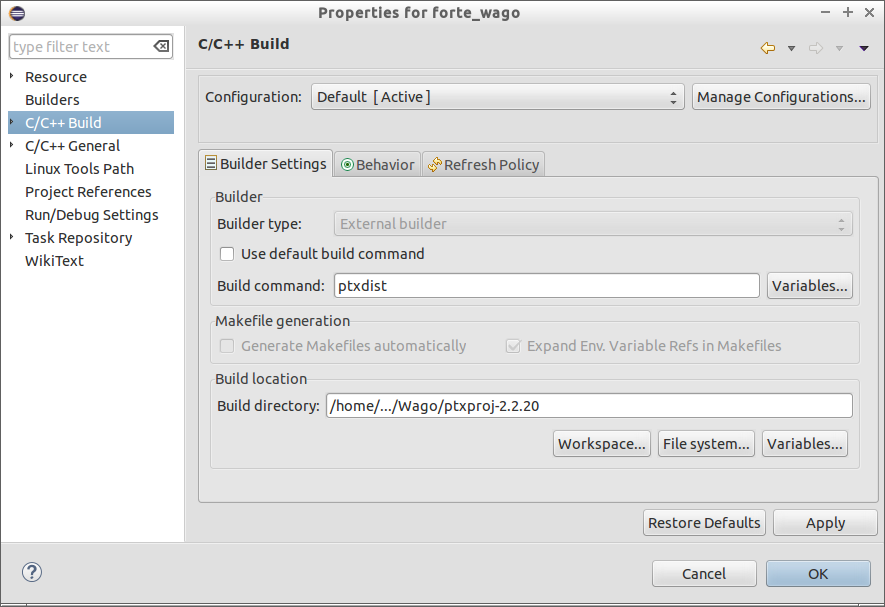
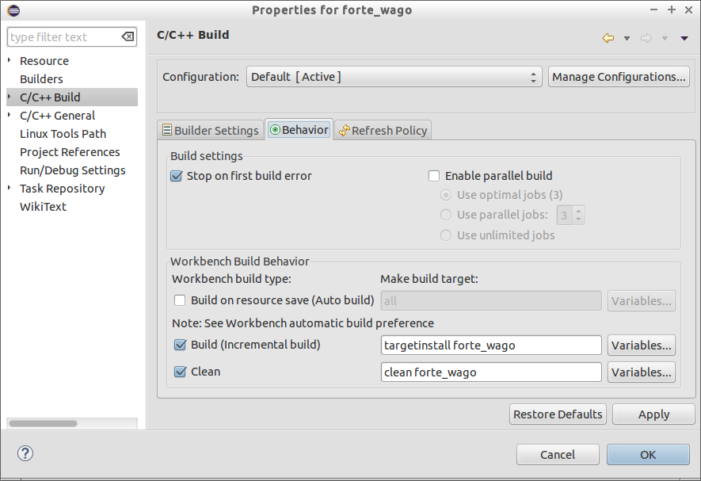
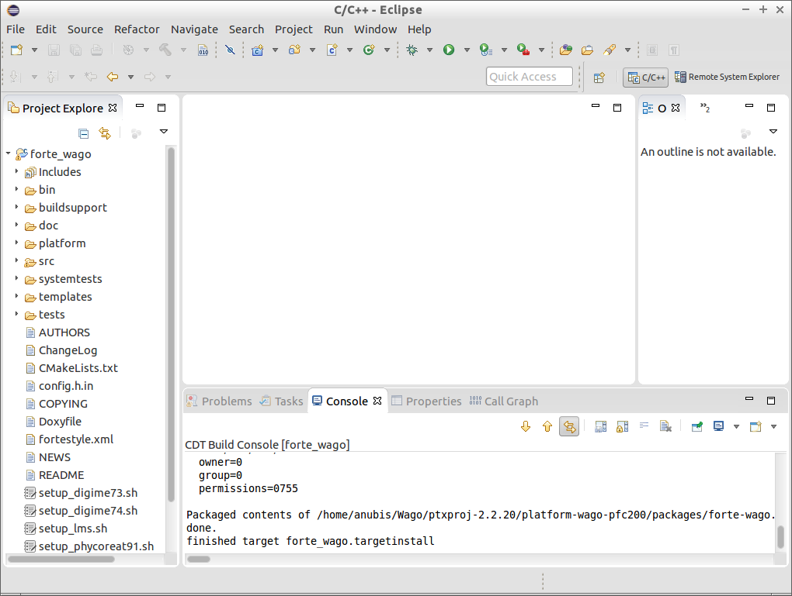
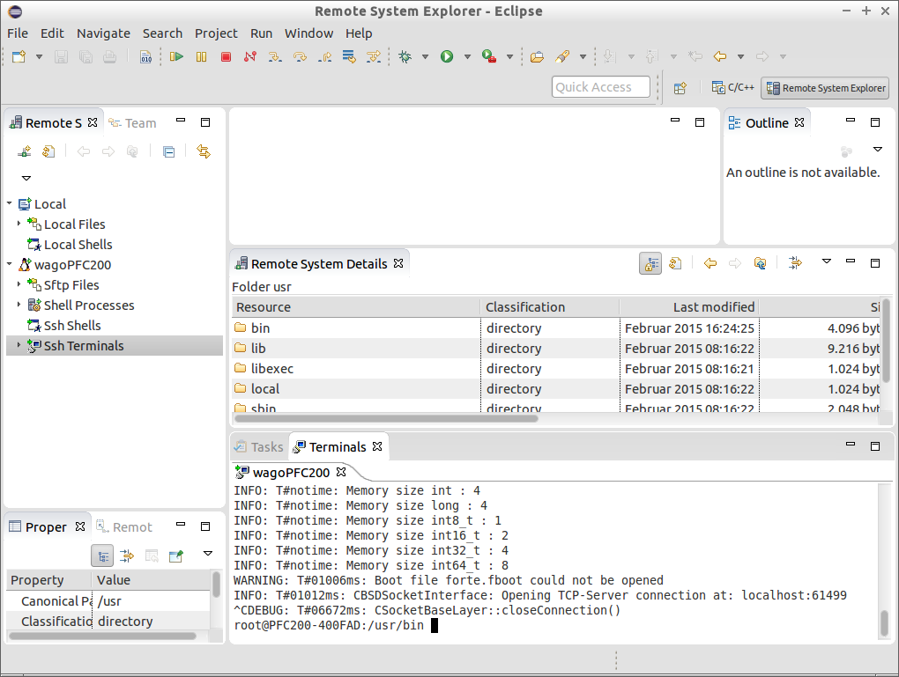
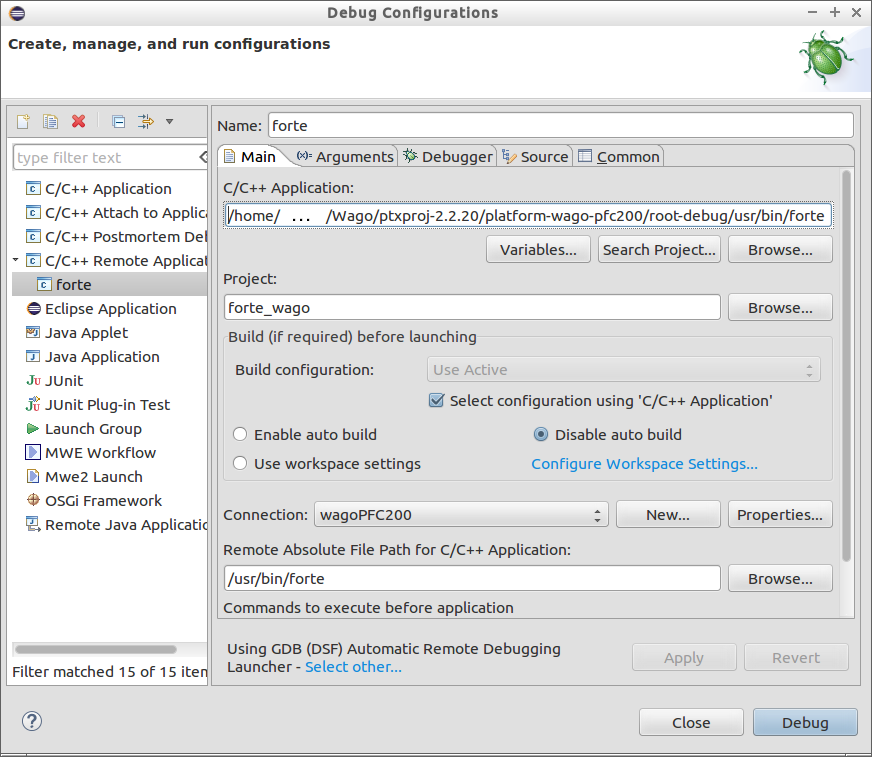
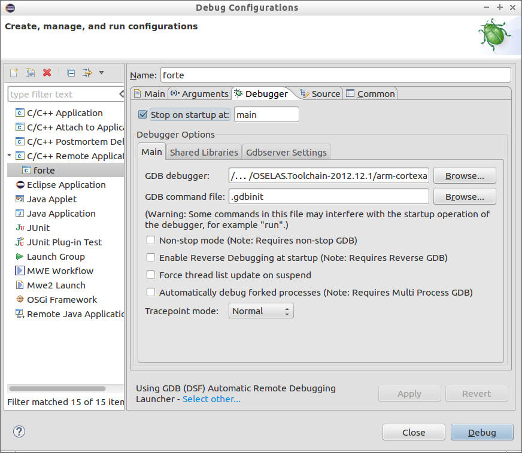

Wago PFC 200 series is a PLC designed to work in Small and Medium Enterprises for small scale automations and runs on a ARM cortex A8, 600 Mhz controller with real time Linux 3.6 (RT preemption patch). This tutorial helps to set up FORTE on the WAGO embedded platform. The essentials for following this tutorial are:
ATTENTION: This tutorial is based on WAGO-PFC-BSP-2014.10.3. The procedure given here is also applicable for the latest board support packages from Wago.The toolchain and the PTXDist version may also change based on the BSP version.
DO NOT install the packages within the root folder! The installation may take more than an hour, therefore be patient till the whole process completes.
FORTE is normally deployed in cross platforms using CMake. Here for the wago device all the build process is controlled by the ptxdist. For FORTE build's process it is important to know about a few directories in the wago development environment. All the ptxdist packages are managed by so called rule files. The rule files are located in wago/ptxproj-2.2.20/rules directory. When you create a new package, rule files packagename.make and packagename.in are created in the rules directory. There are two kinds of source directories, wago/src for system level packages and wago/local_src for new custom packages. The build directory for the target system (wago) is located in a directory called platformwago-wago-pfc200/build-target.
NOTE: PTXDist is a command line utility which works only from the defined project environment, for example ~wago/ptxproj-2.2.20 directory. The "ptxdist" commands will work only in this directory.
The binary can be found in the directory .../ptxproj-2.2.20/platform-wago-pfc200/buid-target/forte_wago-1.6.2-build/src. The binary can be either copied to the target device /usr/bin directory or you can build your own custom linux image by performing <ptxdist go>; command in your ptxproj-2.2.20 directory and boot with your own custom firmware.
FORTE can be debugged remotely from your Ubuntu host machine using Eclipse CDT. For more details please refer to Wago how to Utilize EclipseCDT. Using the same procedure FORTE can be debugged remotely. The recommended folder structure for building FORTE in Eclipse is:
Within the forte-wago folder create a new C Project by , type a project name e.g., forte-wago, deactivate default location and set the location to your FORTE source e.g., forte, choose and and press . Set the properties for the new projects. Within the category set the Build command to ptxdist and the Build directory to your ptxdist installation location.
Set within the Behvior tab to targetinstall forte_wago and Clean to clean forte_wago.
Add the required include directories within the category. The required include directories are:
Within the C/C++ perspective right-click on your project and choose Build Project or . After building your project you should get a Console output as it is shown below.
Within the Remote System Explorer perspective create a New Connection by clicking on . Choose Linux and press . Enter the IP of our Wago PFC as Host name and type any Connection Name e.g. wagoPFC200 and press finish. In the Remote System view you can log to your Wago PFC by right-cklick on and entering root as user and wago as password. A Terminal view should open as well as a Remote System Details view.
Copy the FORTE executable to /usr/bin on the Wago PFC. The executable can be copied to the Wago PFC by pasting it into the /usr/bin folder in the Remote System Details view. Stop the running CoDeSys instance (kill plclinux_rt) if you want to use digital inputs/outputs of the Wago PFC and start FORTE with:
To debug FORTE on a Wago PFC click on the small triangle next to and choose Debug Configurations. Then select C/C++ Remote Application and set any name e.g. forte. Within the main tab set the path to the FORTE executable under C/C++ Application, set the Project to your chosen project name forte_wago, check Disable auto build, set Connection to your chosen Connection name e.g. wagoPFC200 and set the Remote Absolute File Path for C/C++ Application to your FORTE executable on the Wago /usr/bin/forte.
Within the Debugger tab set the GDB debugger to /.../OSELAS.Toolchain-2012.12.1/arm-cortexa8-linux-gnueabihf/gcc-4.7.3-glibc-2.16.0-binutils-2.22-kernel-3.6-sanitized/bin/arm-cortexa8-linux-gnueabihf-gdb.
Debug FORTE with Eclipse as usual.
Now that you installed the required tools, it's time to start using them. Take a look at the following page:
If you want to compile FORTE for another platform or want to know more about that, here's a quick link back:
If you want to go back to the Start Here page, we leave you here a fast access
Or Go to top